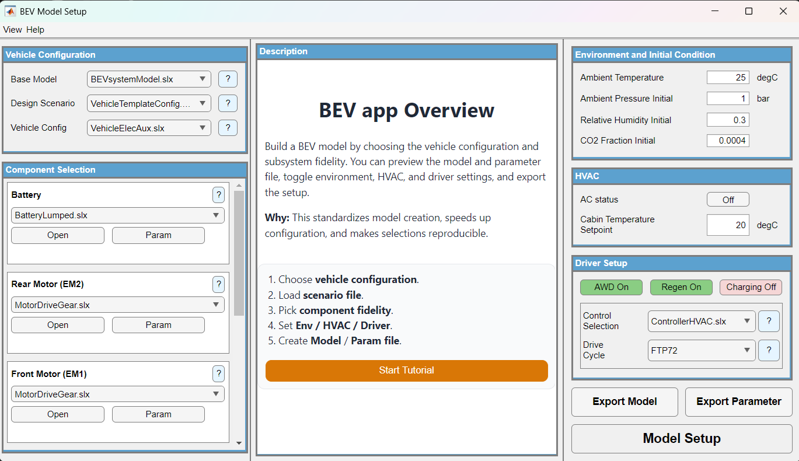
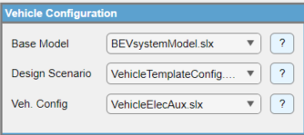
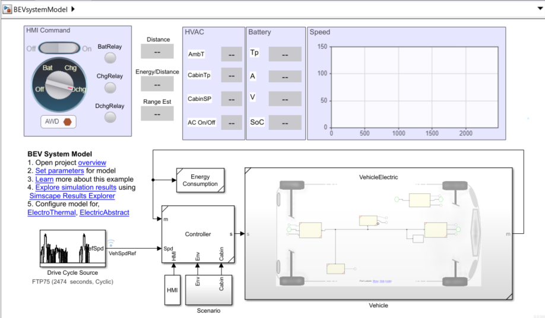
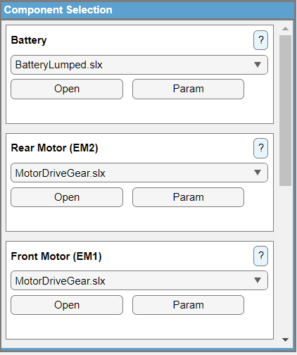
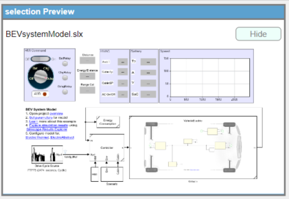
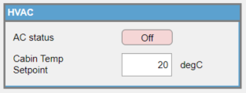
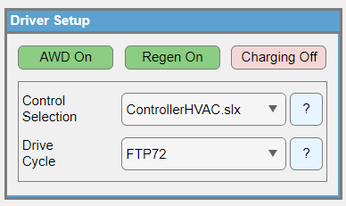
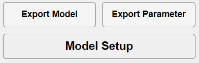

Configure and Export a BEV Model Using the BEV App
This workflow shows how to configure and export a battery electric vehicle model using the BEV App. You will select a vehicle platform, choose component models and controls, set environment and HVAC options, configure the driver and drive cycle, and export a Simulink model and parameter scripts.
Contents
Prepare the required files and products
In this section, you prepare the software products and input files needed to complete the configuration and export workflow.
The following list describes what you need before you begin.
- MATLAB®.
- Simulink®.
- Simscape® and relevant add ons such as Simscape Electrical™, Simscape Driveline™, and Simscape Thermal™.
- A base BEV host model file in SLX format that the app updates.
- Platform configuration files in JSON format.
- Repository folders for components such as Battery, MotorDrive, Charger, and HVAC.
The following image shows the BEV App main window used during this workflow.

Select a vehicle platform
In this section, you select a base model and a vehicle configuration so the app can determine which component and control options are available.
The following image shows the vehicle platform selection panel.

The following list describes what each dropdown does.
- Select the Base Model that contains the BEV layout canvas.
- Select the Design Scenario that defines the platform configuration.
- Select the vehicle configuration template that defines the model architecture.
The following image shows an example base model structure.

The following image shows an example vehicle configuration model.

Choose component models
In this section, you select the component variants used to build the exported model. The app uses your platform JSON to match each instance in the base model to a list of allowed component models.
The following image shows the component selection panel.

The label text in each row comes from the JSON Instances list and must match a subsystem name in your base model.
The dropdown lists model files defined under Models in the JSON, filtered to show only valid options.
How the dropdown gets populated
The following list describes how dropdown options are built.
- The app scans your component repository for available model files.
- It filters them using the JSON
Modelslist for each component. - Only matching models appear in the dropdown.
The following example shows how component entries in the JSON map to instances and dropdown options.
"Components": {
"BatteryHV": {
"Instances": ["Battery"],
"Models": ["BatteryLumped", "BatteryLumpedThermal", "BatteryTableBased"]
},
"MotorDrive": {
"Instances": ["Rear Motor (EM2)", "Front Motor (EM1)"],
"Models": ["MotorDriveGear", "MotorDriveGearTh", "MotorDriveLube"]
}
}
Controls in each component row
The following list describes what each UI element is used for.
- Label identifies the component instance name from JSON
Instancesand should match the subsystem name in the base model. - Dropdown selects a component model from the JSON filtered
Modelslist. - Open opens the selected component model.
- Param opens the parameter script for that component.
- Question mark opens the preview and description for the selection.
Link parameter files
In this section, you link a parameter file to a component so the Param button opens the correct script during setup and export.
When linked, the Param button opens the associated parameter file that follows the convention <SelectedComponentName>Param.m.
You can link any parameter file to the component. Right click the Param button to link or unlink a parameter file.
The following image shows the right click menu used to link and unlink a parameter file.

Review the preview and description
In this section, you confirm that the selected component model and control model match what you intend to export. When you change a selection in the Components panel, the app updates the preview and description automatically.
Preview panel
The following list describes what the preview panel helps you check.
- Shows a snapshot of the selected model canvas.
- Updates when you change a dropdown selection.
- Helps catch missing lines, wrong number of ports, or wrong instance selection before export.
The following image shows an example preview panel for a selected model.

Description panel
The following list describes what the description panel provides.
- Summarizes the purpose of the selected model.
- Describes the main interfaces and key assumptions for the model.
- Provides selection context when multiple variants exist.
The following image shows an example description panel for a selected model.

Define environment and initial conditions
In this section, you define ambient environment and initial state values used by thermal and gas based components. These values are applied through the environment subsystem in the base model.
The following list describes the parameters in this panel.
- Amb. Temp is the ambient air temperature around the vehicle. Default is
25degrees Celsius. - Amb. Press Init is the initial atmospheric pressure. Default is
1bar. - Rel. Humidity Init is the initial relative humidity of ambient air. Default is
0.3. - CO2 Fraction Init is the carbon dioxide volume fraction in ambient air. Default is
0.0004.
When you change these values in the app, they propagate to the environment subsystem of the base model. For most components, the updated conditions take effect the next time you export or simulate.
The following image shows the environment and initial condition panel.

Configure HVAC settings
In this section, you control whether cabin air conditioning is active during simulation and set the target cabin temperature. This panel is enabled only when the selected configuration includes an HVAC component.
The following list describes the controls in this panel.
- AC Status toggles the air conditioning system on and off. Default is off.
- Cabin Temperature Setpoint defines the desired cabin air temperature. Default is
20degrees Celsius.
Turning AC on increases total power demand and thermal load, which affects battery drain and range. For baseline studies, run with AC off first, then enable AC to measure the impact on efficiency.
The following image shows the HVAC configuration panel.

Set up driver, controls, and drive cycle
In this section, you set drive mode options, select a controller model, and choose a drive cycle. These settings define how the vehicle is driven in simulation and which speed profile the driver follows.
The following image shows the driver setup panel.

Drive mode buttons
The following list describes what each drive mode toggle does.
- AWD enables or disables all wheel drive mode. When enabled, front and rear motor drives are active. When disabled, rear motor drive is active.
- Regen enables or disables regenerative braking. When disabled, ensure the model includes a mechanical brake subsystem to provide braking torque.
- Charging switches the vehicle to charging mode and disables propulsion related settings such as AWD and Regen.
Control selection
The controller dropdown is populated from the JSON Controls section. It lists control models available for the selected configuration.
Selecting a control model updates the driver and control logic used in simulation.
The following example shows how the controls section is represented in the JSON.
"Controls": {
"Instances": ["Controller"],
"Models": ["ControllerFRM", "ControllerHVAC"]
}
The following list describes the controller UI elements.
- Dropdown lists the control models defined under JSON
Models. - Question mark shows the control description and preview of the control block layout.
Drive cycle selection
The drive cycle dropdown defines which speed versus time profile the driver follows. The list is populated from options available in the drive cycle source block inside the base model.
The following list describes drive cycle selection behavior and requirements.
- Common examples include
FTP72,WLTP,NEDC, andUS06. - If no options appear, install the Vehicle Drive Cycle Blocks package from the Simulink Support Package for Vehicle Drive Cycles.
- The question mark opens the description and preview of the selected drive cycle profile.
Export the model and parameters
In this section, you generate the Simulink model and parameter scripts that match your selections. Use model export when you want the model structure updated, and use parameter export when you want parameter values scripted.
The following image shows the export controls.

Model Export
Use Model Export to create or update the BEV model using the selections you made in the app. The following list describes what Model Export does.
- Opens the selected base model.
- Locates subsystem instances defined by JSON
Instancesinside the base model. - Replaces or configures those subsystems with the component models selected in the Components panel.
- Applies environment and HVAC settings.
- Applies driver, controls, and drive cycle selections.
Parameter Export
Use Parameter Export to generate MATLAB parameter scripts that correspond to the selected components and controls. The following list describes what Parameter Export does.
- Creates or updates a parameter file for the current configuration.
- Collects linked component parameter files that you linked in the Components panel.
- Writes HVAC, environment, and driver related variables when they are exposed by the configuration.
Missing parameter link panel
If one or more components do not have a parameter file linked, the app opens a link parameter file panel when you press Parameter Export. The following list describes what you can do in that panel.
- Browse to an existing parameter file and link it.
- Continue with defaults for components that remain unlinked.
This uses the same linking mechanism as the right click link param file option in the Components panel. Parameter Export checks this to avoid generating an incomplete setup script.
Model Setup
Model Setup runs the recommended export sequence in one action. Use it when you want a single button workflow that updates both the model structure and parameter scripts.